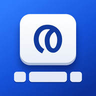

Indic Keyboard for iPhone
Alpha Just built — alpha testing in progress.
I type Malayalam with Swanalekha, and my phone is an iPhone. The keyboard I wanted only existed on Android, so I ported the open-source Indic Keyboard by Swathanthra Malayalam Computing to iOS. It installs as an app and then works in every app on the phone, like the built-in keyboards. Nothing you type leaves the phone.
- Version0.4.3 alpha
- Works oniPhone & iPad, iOS 16+
- PriceFree, open source
- PrivacyNo Full Access needed
What it does
- Swanalekha phonetic typing, using SMC's own rules. Type how a word sounds in English letters and the bar above the keys offers the other letters it could be. A
~key next to the space bar types chillu letters. - Mozhi-style transliteration (ലിപ്യന്തരണം).
- Direct Malayalam layouts from the Android app: Lalitha, Compact, Mobile InScript, InScript and Poorna InScript. Hold a key for its extra letters.
- English (India) with word suggestions and auto-correction. It uses Apple's on-device spell checker, and backspace undoes a correction. It leaves Manglish alone:
enthu,alleandmachanestay as you typed them. - Emoji with categories and Frequently Used.
- Keys sized and spaced like the iPhone keyboard, in light and dark mode. One key next to the space bar switches between the layouts you've turned on.
Swanalekha in three examples
| You type | You get |
|---|---|
malayaaLam | മലയാളം |
njaan~ | ഞാൻ |
ka | ക — and the bar offers ഗ ഖ ഘ |
How to get it on your iPhone
It isn't on the App Store, and there's no file to download and tap. iPhones only install apps from the App Store, from TestFlight, or ones you build yourself. For now, that means building it yourself. It's free and you don't need to write any code, but you do need a Mac, a free Apple ID and about 30–60 minutes.
- Install Apple's free Xcode app on the Mac from the App Store.
- Download the project from GitHub and open it in Xcode.
- Plug in your iPhone, choose your Apple ID, and press ▶. Xcode puts the app on the phone.
- On the iPhone: Settings → General → Keyboard → Keyboards → Add New Keyboard → Indic Keyboard. Then tap 🌐 in any app.
The guide explains every click, and what to do if something goes wrong. With a free Apple ID, the app needs reinstalling from Xcode every 7 days, which takes one click.
| You have… | Can you use it? |
|---|---|
| A Mac and an iPhone or iPad (iOS 16 or newer) | Yes. Follow the guide. |
| Only an iPhone, no Mac | Not yet. A friend with a Mac can install it for you, or wait for a TestFlight or App Store release. |
| An Android phone | Use the original Indic Keyboard from F-Droid. |
Status
This is an early version that I'm testing on my own phone. Expect rough edges. The changelog lists every version and fix. Not there yet: Malayalam word prediction, swipe typing and voice input. iOS never shows other companies' keyboards in password fields.
Credits
The Indic Keyboard and its Malayalam layouts are by the Indic Project and Swathanthra Malayalam Computing (Apache 2.0). Swanalekha is by Santhosh Thottingal (MIT). The Mozhi-style rules come from Wikimedia's jquery.ime (GPL). I ported it to iOS with the help of Claude, Anthropic's AI. The full licence texts are in the repository.